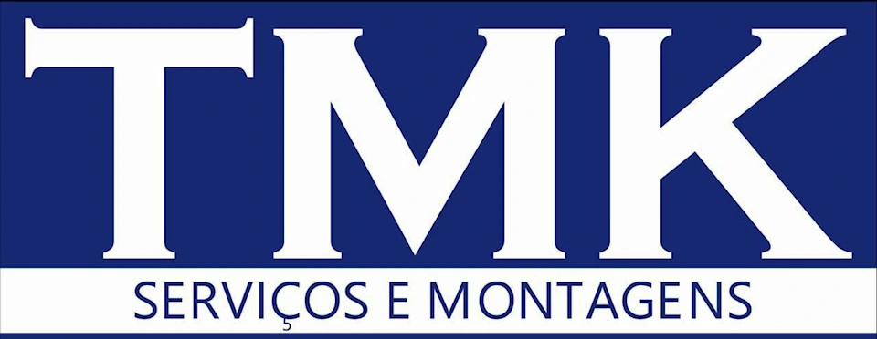
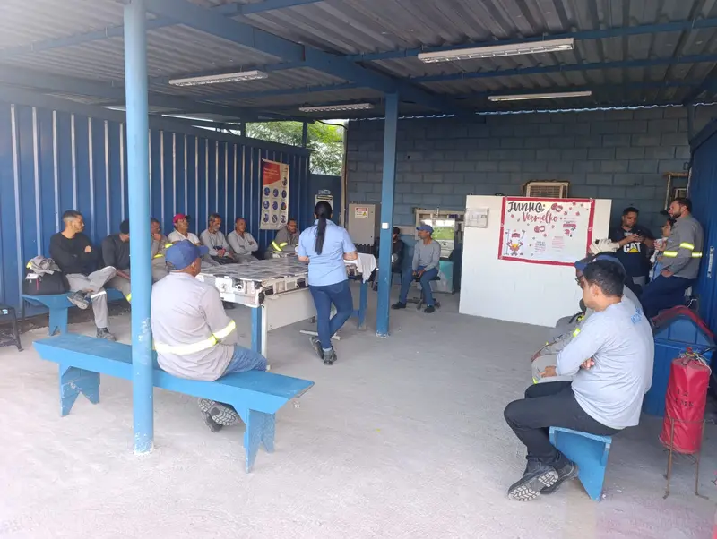
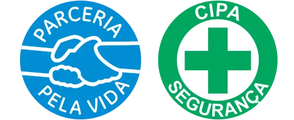

Desenvolver e executar soluções de engenharia e infraestrutura elétrica com excelência, promovendo a segurança das pessoas, a qualidade dos processos e a eficiência operacional.

Fale com a TMKTMK Serviços e Montagens · desde 2006
Subestações, linhas de transmissão e instalações elétricas de até 500 kV.
Resultados
De obras desde 2006, de subestações de distribuição a transmissão.
Instalações elétricas de até 500 kV.
De linha de transmissão implantados em um único projeto (Alcon).
ES, MS, RS e AL — e crescendo.
Quem somos
A TMK Serviços e Montagens é especializada em soluções para os setores de energia e infraestrutura elétrica. Fundada em 2006, começou na construção e manutenção de subestações de distribuição e expandiu sua atuação para instalações de até 500 kV, incluindo linhas de transmissão, eletricidade industrial, ensaios elétricos e tratamento de óleo mineral isolante.
Nossa trajetória começou com obras de infraestrutura elétrica para a EDP Escelsa e cresceu para o setor industrial, com obras de grande porte para empresas como Fibria, ArcelorMittal Tubarão, Petrobras e ISA CTEEP.
Com sede no Espírito Santo e obras em várias regiões do Brasil, entregamos soluções confiáveis dentro dos mais altos padrões do setor.
Desenvolver e executar soluções de engenharia e infraestrutura elétrica com excelência, promovendo a segurança das pessoas, a qualidade dos processos e a eficiência operacional.
Ser referência nacional em engenharia e infraestrutura elétrica, com uma cultura em que segurança, qualidade e eficiência caminham juntas.
Áreas de atuação · do projeto ao comissionamento
Regime turnkey: projetos civis, eletromecânicos e elétricos, compras, obras civis, montagem eletromecânica, recapacitação de linhas, automação e comissionamento.
Portfólio
Clique em uma pasta para abrir e ver as obras.
Onde atuamos
Da sede em Serra/ES, levamos energia a obras em diferentes regiões do país.

Compromisso com a segurança do trabalho
Na TMK, a segurança das pessoas é prioridade em todas as atividades: planejamento, treinamento das equipes e acompanhamento em campo em cada etapa da obra.
